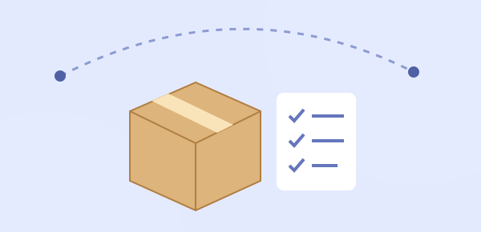
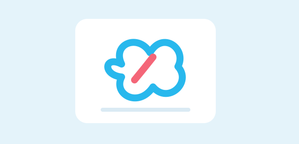
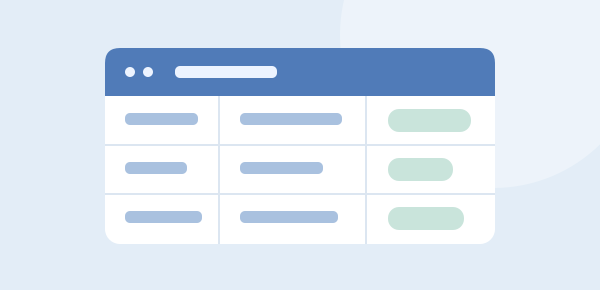
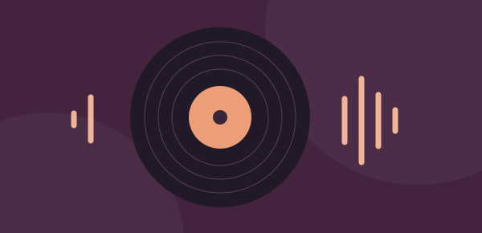
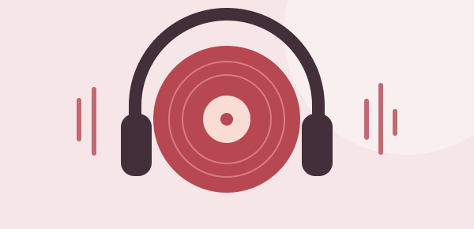
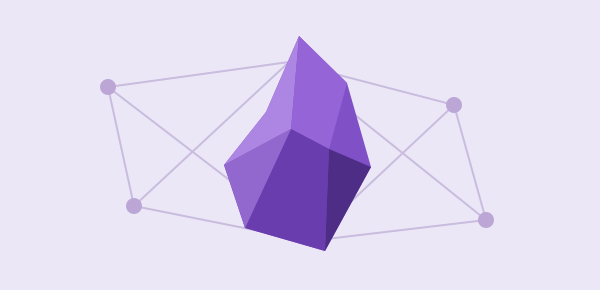
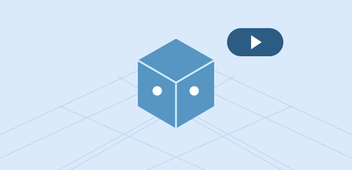

生活、知识与创作，从这里开始。
账户、收支、资产负债与现金流预测，让家庭资金安排清晰可查。
巴塞罗那气候、学校、租房与城市研究，集中查看专题和资料。

前往西班牙的运输清单入口，集中查看需要运送的物品。

打开百度网盘客户端，管理云端文件、传输任务与备份资料。
打开飞书客户端，处理消息、查看文档与日程，继续日常协作。

打开代办管理，登录后继续使用。

发现 AI 音乐和创作灵感，从一段想法开始探索自己的声音。

听喜欢的音乐、探索歌单，为日常工作与创作寻找声音灵感。
进入公众号后台，管理图文素材、文章与公众号内容。
围绕自己的资料整理笔记、提问与研究，把零散信息变成知识。

打开 Obsidian，整理本地笔记、连接想法，积累自己的知识库。
管理游戏美术、设计规范与素材，直接进入主视觉设计要求。

打开本机 Godot 项目管理器，继续游戏开发、场景搭建与运行调试。